stuq-wxapp
狼叔带你一起玩转微信应用号
微信小程序开发适合你吗？
如果想邀请分享，请邮寄给我i5ting@126.com,如果时间ok，我会尽量分享
讲师介绍
英文版本
Afred Sang（aka i5ting）
Alfred Sang (aka i5ting), CTO of Aircos, top trainer of StuQ, author of the open source project Moa.js, and also an evangelist of Node.js. The uniqueness of his experience makes him a full stack practitioner. He served at Sina, NQ Mobile by playing several major roles, such as Chief Architect, R&D Director. Currently, he is focusing on technical architecture and organization/talent development. A book from him, named as "Smashing Node.js 6: Koa Everywhere", is also on the way.
中文版
桑世龙（网名i5ting），空弦科技 CTO，StuQ 明星讲师，开源项目 Moajs 作者，Node.js 技术布道者 曾就职在新浪、网秦，曾做过前端、后端、数据分析、移动端负责人、做过首席架构师、技术总监，全栈技术实践者，目前主要关注技术架构和团队梯队建设方向，正在写一个本新书《更了不起的 Node 4：将下一代 Web 框架 Koa 进行到底》
微信小程序是什么？
先回顾一下微信应用号发布事件
传闻已久的微信应用号终于得到证实。21日晚间，微信公众号“小道消息”发布文章称收到微信官方的微信应用号内测邀请。根据内测邀请函显示，应用号是微信公众平台提供了一种新的开放能力，开发者可以快速开发一个小程序。
有腾讯内部员工在职场社交软件脉脉上爆料：应用号以“微信公众平台小程序”的名义进行内测发布，核心功能是提供一些本地的API供H5上面的js调用，以此提升微信上H5应用的流畅度。
据爆料，根据腾讯内部数据筛选，第一批应用号内测只邀请了200个微信公众号，若还想收到邀请的公众号只能等待下一批。
早在今年年初，“微信之父”张小龙就透露出正在打造应用号的消息，而后张小龙便在2016年微信公开课PRO上，第一次正式对外公布应用号。
什么是应用号？张小龙介绍说，当用户关注了一个「应用号」之后，就相当于安装了一款 app。在「应用号」内，用户就可以实现对 app 的一些基本诉求。例如，目前许多用户会选在微信钱包中可以买机票、火车票，而不是去下载一个并不常用的买票软件；未来在「应用号」中，可以实现更多的功能。并和其他 app 一样，这个公众号平时是不会向用户主动发送内容的，因此会避免打扰。
据张小龙介绍，推出应用号基于两方面的原因。一是用户手机上可以少下载安装一些软件，平时打开频率不高的软件，可以用应用号代替；二是用户换手机时无需重复安装软件。而对于开发者，尤其是创业者来说，在应用号中实现一个功能远比开发一款 app 省钱省力许多。
一句话简介
微信小程序是限于微信提供的MINA框架提供的app开发便捷展示解决方案
从IDE破解开始
helper for https://github.com/gavinkwoe/weapp-ide-crack
第一批内测只有200个，所以大部分人都没办法弄到，但又想提前体验，怎么办呢？
先从 https://github.com/gavinkwoe/weapp-ide-crack 开始说起吧。
gavinkwoe是谁？
gavinkwoe是郭虹宇，老郭以前在腾讯，后来出来在呼家楼那边创业，很棒的公司，他本人技术也是相当到位的，最早是beeframework，代码写的还是相当棒，这货对tcp和c也相当厉害，据说拿过专利。后来bee半火不火的，就搞了类似于css描述生成iOS页面的东西，之后react-native出来之后，貌似就转rn了。而且还带出了QFish这样的优秀小弟，很棒的。
总之，老郭有非常强大的iOS开发能力，所以这次破解微信开发工具也是有一定必然性的。
小助手：weide
https://github.com/i5ting/weide
它其实就为了简化安装破解而写的简单小程序。利用node模块和npm强大的机制，简化破解并提供实用辅助功能。特别简单，但还算实用。
安装小助手
$ [sudo] npm i -g weide
小助手用法
- 下载微信web开发者工具0.9(百度: https://pan.baidu.com/s/1pLxqFzH （密码: bwt9）) 位置 /Applications/微信web开发者工具.app/
- 下载微信web开发者工具0.7(百度: https://pan.baidu.com/s/1pLTKIqJ （密码: iswg）) 位置 /Applications/微信web开发者工具0.7.app/
如果开发工具安装目录是/Applications/微信web开发者工具.app/，无需配置，一条命令即可
$ weide
否则需要配置环境变量
mac
$ export WECHAT_IDE=/Applications/微信web开发者工具0.9.app/
$ weide
windows cmd
$ set WECHAT_IDE=/Applications/微信web开发者工具0.9.app/
$ weide
项目创建
用法部分来自老郭 http://www.geek-zoo.com
- 运行『微信Web开发者工具』
- 通过微信扫描二维码
- 创建项目
- AppID：随便填
- 项目名称：随便填
- 本地开发目录：选择一个目录
- 点击「添加项目」
- 此时如果出错，先退出再重进
- 此时，能够看到项目列表了
- 打开项目
- 开始开发
- Good luck
Demo运行
- 创建项目
- 打开项目所在目录
- 下载「Demo源代码」并解压覆盖
- 打开项目
- Good luck
常见问题
- 找不到所要替换的文件
- 问题原因：开发工具版本不正确，老版本不支持
- 解决方案：确保下载的程序版本在0.9.092100以上
- Failed to load resource: net::ERR_NAME_NOT_RESOLVED http://1709827360.appservice.open.weixin.qq.com/appservice
- 问题原因：通常是由于系统设置了代理如Shadowsocks等。
- 解决方案：关闭代理，或者依次点击工具栏“动作”-"设置"，选择“不使用任何代理，勾选后直连网络”。
- 修复asdebug.js报错
- 问题原因：TypeError: Cannot read property 'MaxRequestConcurrent' of undefined
- 解决方案：替换 /Resources/app.nw/app/dist/weapp/appservice/asdebug.js
- 扫码登录失败
- 问题原因：please bind your wechat account to the appid first
- 解决方案：先使用0.7版本的进行扫码登陆，登陆成功后，再用0.9的版本打开就直接进入了。
- 0.7版本地址：http://dldir1.qq.com/WechatWebDev/release/0.7.0/wechat_web_devtools_0.7.0.dmg
- mac版本升级到0.9.092300后，asdebug.js报错
- 问题原因：TypeError: Cannot read property 'MaxRequestConcurrent' of undefined
- 解决方案：替换 /Resources/app.nw/app/dist/weapp/appservice/asdebug.js
工具截图


禁用自动升级
破解之后，微信官方立马2个通宵，修复了大量问题，包括store命名错误，自动升级。可以说之前的版本是没有被特意“保护”的，所以可以挖出更多细节，nw.js的升级机制很简单，非常容易破解
$ wecrack
会修改Contents/Resources/app.nw/package.json的版本号，避免自动升级
一键美化压缩js代码
会读取默认安装位置，或环境变量里的WECHAT_IDE下的所有js都会美化
$ allb
调试
$ DEBUG=weide weide
实例：用cnode社区api做微信小应用
https://github.com/coolfishstudio/wechat-webapp-cnode
导入项目
添加项目
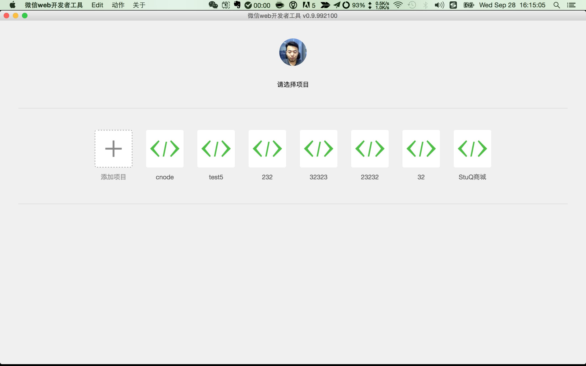
选择源码所在目录
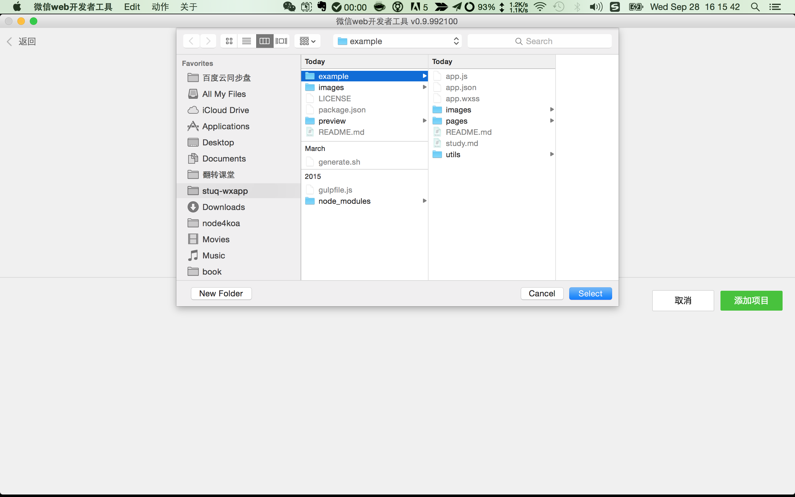
完整信息
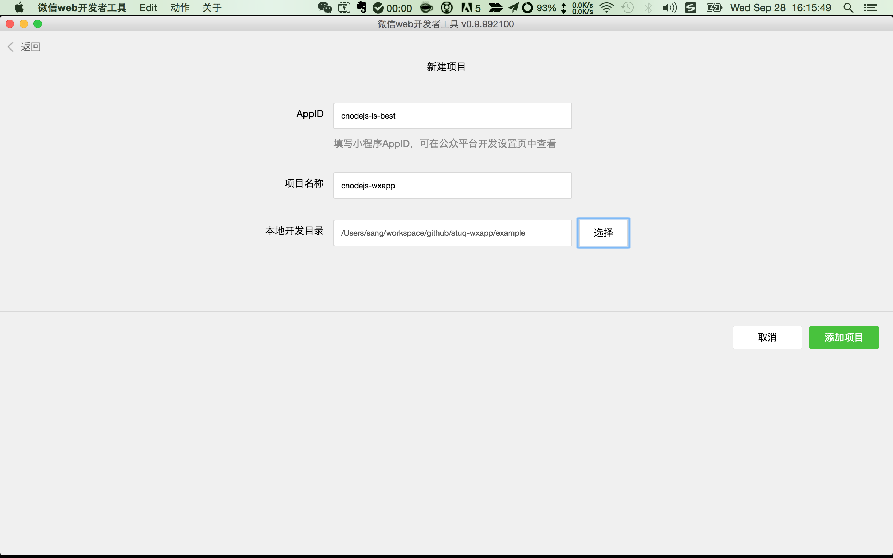
首页
效果
布局
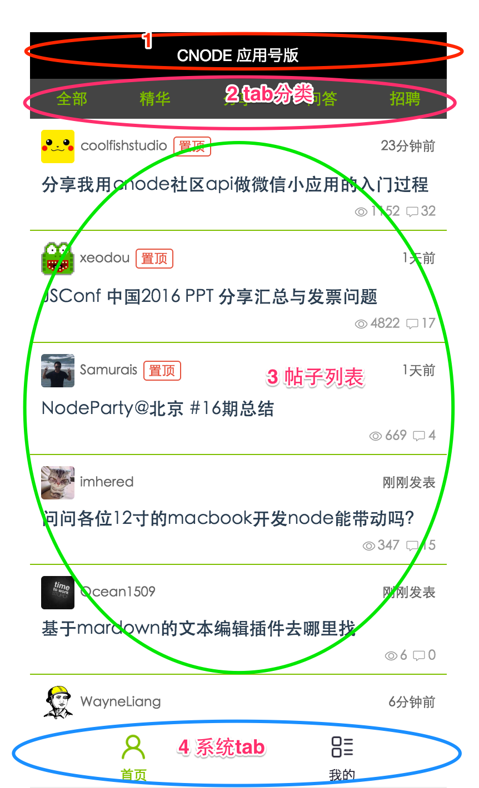
example/pages/topics/topics.wxml
<!--posts.wxml-->
<view class="topics-main">
<view class="top-bar">
<view class="top-bar-item" id="all" catchtap="onTapTag">全部</view>
<view class="top-bar-item" id="good" catchtap="onTapTag">精华</view>
<view class="top-bar-item" id="share" catchtap="onTapTag">分享</view>
<view class="top-bar-item" id="ask" catchtap="onTapTag">问答</view>
<view class="top-bar-item" id="job" catchtap="onTapTag">招聘</view>
</view>
<scroll-view class="posts-list" style="height:100%" scroll-y="true" bindscrolltolower="lower">
<block wx:for="{{postsList}}">
<view class="posts-item" index="{{index}}" id="{{item.id}}" catchtap="redictDetail">
<view class="author">
<image class="author-avatar" src="{{item.author.avatar_url}}"></image>
<view class="author-name">{{item.author.loginname}}</view>
<view class="posts-tag hot" wx:if="{{item.top === true}}">置顶</view>
<view class="posts-tag" wx:if="{{item.good === true}}">精华</view>
<view class="posts-last-reply">{{item.last_reply_at}}</view>
</view>
<view class="posts-title">{{item.title}}</view>
<view class="bar-info">
<view class="bar-info-item">
<image class="bar-info-item-icon" src="/images/icon/reply.png"></image>
<view class="bar-info-item-number">{{item.reply_count}}</view>
</view>
<view class="bar-info-item">
<image class="bar-info-item-icon" src="/images/icon/visit.png"></image>
<view class="bar-info-item-number">{{item.visit_count}}</view>
</view>
</view>
</view>
</block>
</scroll-view>
<loading hidden="{{hidden}}">
加载中...
</loading>
</view>
三大部分
- top-bar 分类是普通的view
- posts-list 帖子列表，是scroll-view
- loading 内置的组件，默认隐藏
简单点说，就是你们误会了的组件
是不是跟vue、react很像？
http://wxopen.notedown.cn/component/
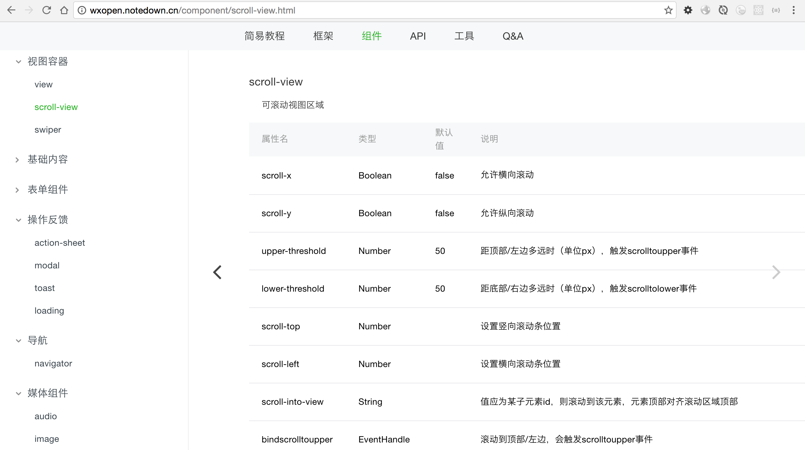
帖子列表
<scroll-view class="posts-list" style="height:100%" scroll-y="true" bindscrolltolower="lower">
<block wx:for="{{postsList}}">
<view class="posts-item" index="{{index}}" id="{{item.id}}" catchtap="redictDetail">
<view class="author">
<image class="author-avatar" src="{{item.author.avatar_url}}"></image>
<view class="author-name">{{item.author.loginname}}</view>
<view class="posts-tag hot" wx:if="{{item.top === true}}">置顶</view>
<view class="posts-tag" wx:if="{{item.good === true}}">精华</view>
<view class="posts-last-reply">{{item.last_reply_at}}</view>
</view>
<view class="posts-title">{{item.title}}</view>
<view class="bar-info">
<view class="bar-info-item">
<image class="bar-info-item-icon" src="/images/icon/reply.png"></image>
<view class="bar-info-item-number">{{item.reply_count}}</view>
</view>
<view class="bar-info-item">
<image class="bar-info-item-icon" src="/images/icon/visit.png"></image>
<view class="bar-info-item-number">{{item.visit_count}}</view>
</view>
</view>
</view>
</block>
</scroll-view>
布局是scroll-view，然后嵌入了
<block wx:for="{{postsList}}">
</block>
像不像ejs里的
<ul>
<% for(var i=0; i<supplies.length; i++) {%>
<li><%= supplies[i] %></li>
<% } %>
</ul>
然后我们看看里面的单条展示
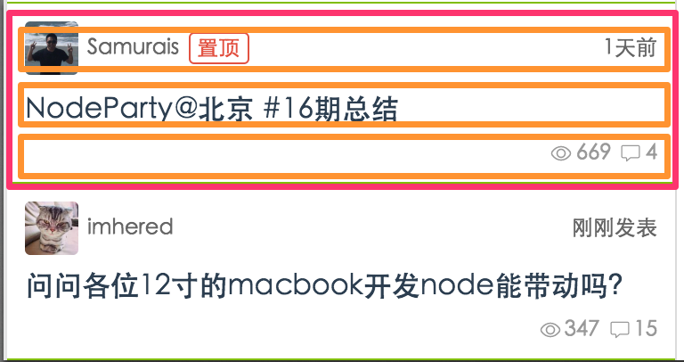
<view class="posts-item" index="{{index}}" id="{{item.id}}" catchtap="redictDetail">
<view class="author">
<image class="author-avatar" src="{{item.author.avatar_url}}"></image>
<view class="author-name">{{item.author.loginname}}</view>
<view class="posts-tag hot" wx:if="{{item.top === true}}">置顶</view>
<view class="posts-tag" wx:if="{{item.good === true}}">精华</view>
<view class="posts-last-reply">{{item.last_reply_at}}</view>
</view>
<view class="posts-title">{{item.title}}</view>
<view class="bar-info">
<view class="bar-info-item">
<image class="bar-info-item-icon" src="/images/icon/reply.png"></image>
<view class="bar-info-item-number">{{item.reply_count}}</view>
</view>
<view class="bar-info-item">
<image class="bar-info-item-icon" src="/images/icon/visit.png"></image>
<view class="bar-info-item-number">{{item.visit_count}}</view>
</view>
</view>
</view>
可以看出是一个cell里分了3行
- 第1行 author 作者、时间
- 第2行 posts-title 标题
- 第3行 bar-info 评论，查看次数
然后单行，以author为例子
<view class="author">
<image class="author-avatar" src="{{item.author.avatar_url}}"></image>
<view class="author-name">{{item.author.loginname}}</view>
<view class="posts-tag hot" wx:if="{{item.top === true}}">置顶</view>
<view class="posts-tag" wx:if="{{item.good === true}}">精华</view>
<view class="posts-last-reply">{{item.last_reply_at}}</view>
</view>
各位看到这里有啥感觉呢？
如何获取数据？
上面模板里的for + 描述用的block，有一个postsList，如果有它就可以显示了。那么如何它在哪里呢？
其实在example/pages/topics/topics.js里的
Page({
data: {
title: '话题列表',
postsList: [],
hidden: false,
page: 1,
tab: 'all'
},
...
})
注意data里的postsList。也就是说data里的面内容会和模板一起编译，有木有明白点什么？
和模板引擎像么？
模板引擎原理
编译（模板 + 数据）= html
你只要setData,它就会自动渲染，是不是有点像mvvm？$scope?
self.setData({
postsList: self.data.postsList.concat(res.data.data.map(function (item) {
item.last_reply_at = util.getDateDiff(new Date(item.last_reply_at));
return item;
}))
});
只不过所有的数据都放到data作为上下文，这其实是简化了的方案。
http请求
api是获取主页列表
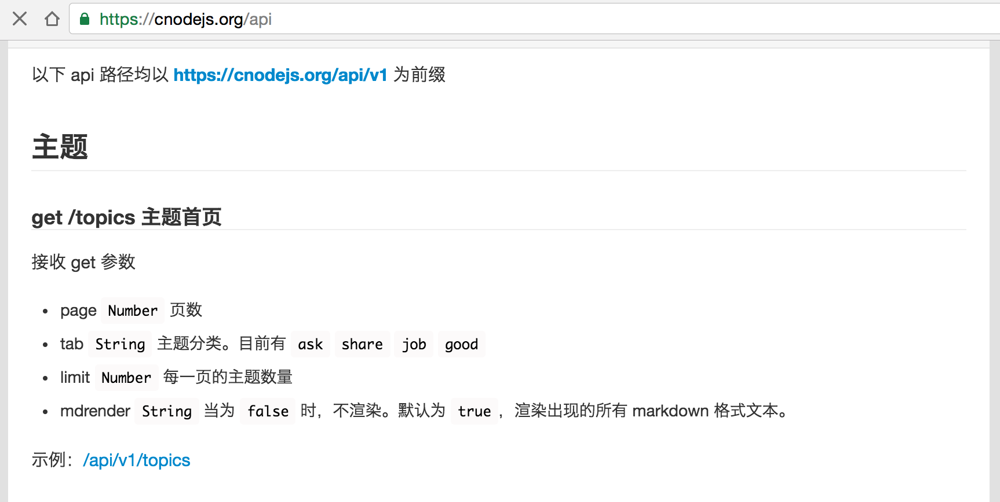
具体的调用wx.request向服务器发送
wx.request({
url: Api.getTopics(data),
success: function (res) {
self.setData({
postsList: self.data.postsList.concat(res.data.data.map(function (item) {
item.last_reply_at = util.getDateDiff(new Date(item.last_reply_at));
return item;
}))
});
setTimeout(function () {
self.setData({
hidden: true
});
}, 300);
}
});
这里很简单
- get请求
- url = Api.getTopics(data)
- success 是当请求成功的时候的回调处理
和ajax基本一样，对比$.ajax，想想
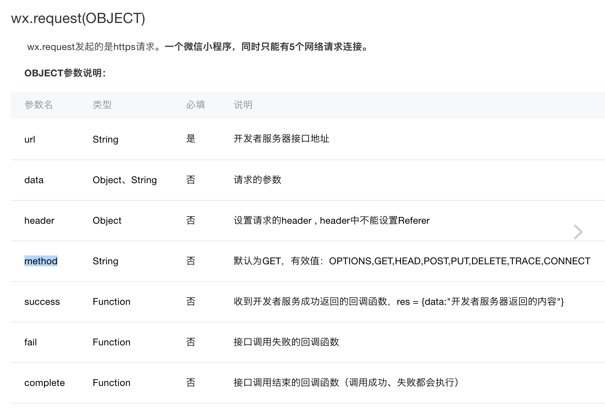
更多示例
wx.request({
url: 'test.php',
data: {
x: '' ,
y: ''
},
header:{
"Content-Type":"application/json"
},
success: function(res) {
var data = res.data;
}
});
剩下的我们还需要啥呢？
后台接口api开发就够了
Page的生命周期
http://wxopen.notedown.cn/framework/app-service/page.html
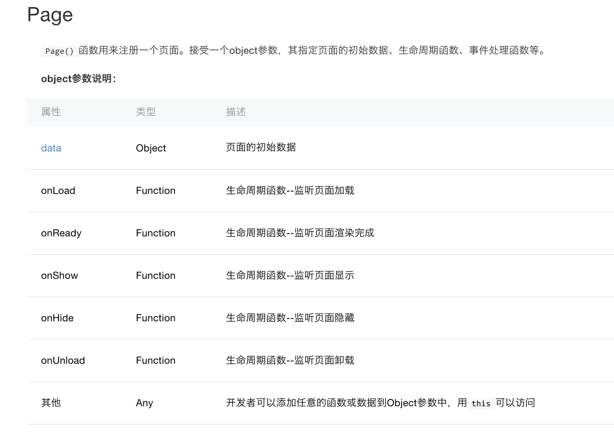
群里有iOS工程师
@interface ViewController ()
@end
@implementation ViewController
- (void)viewDidLoad {
[super viewDidLoad];
// Do any additional setup after loading the view, typically from a nib.
}
- (void)didReceiveMemoryWarning {
[super didReceiveMemoryWarning];
// Dispose of any resources that can be recreated.
}
@end
页面刚进来的时候掉的viewDidLoad，而html里的onload，是不是非常类似？会有人想到dp里的模板模式么？
//index.js
Page({
data: {
text: "This is page data."
},
onLoad: function(options) {
// Do some initialize when page load.
},
onReady: function() {
// Do something when page ready.
},
onShow: function() {
// Do something when page show.
},
onHide: function() {
// Do something when page hide.
},
onUnload: function() {
// Do something when page close.
},
// Event handler.
viewTap: function() {
this.setData({
text: 'Set some data for updating view.'
})
}
})
tab
模板
<view class="top-bar">
<view class="top-bar-item" id="all" catchtap="onTapTag">全部</view>
<view class="top-bar-item" id="good" catchtap="onTapTag">精华</view>
<view class="top-bar-item" id="share" catchtap="onTapTag">分享</view>
<view class="top-bar-item" id="ask" catchtap="onTapTag">问答</view>
<view class="top-bar-item" id="job" catchtap="onTapTag">招聘</view>
</view>
事件触发
catchtap="onTapTag"
这个也是Page上下文里的方法
onTapTag: function (e) {
var self = this;
var tab = e.currentTarget.id;
self.setData({
tab: tab
});
if (tab !== 'all') {
this.fetchData({tab: tab});
} else {
this.fetchData();
}
},
那么如何知道e里都有啥呢？
简单的打印log即可
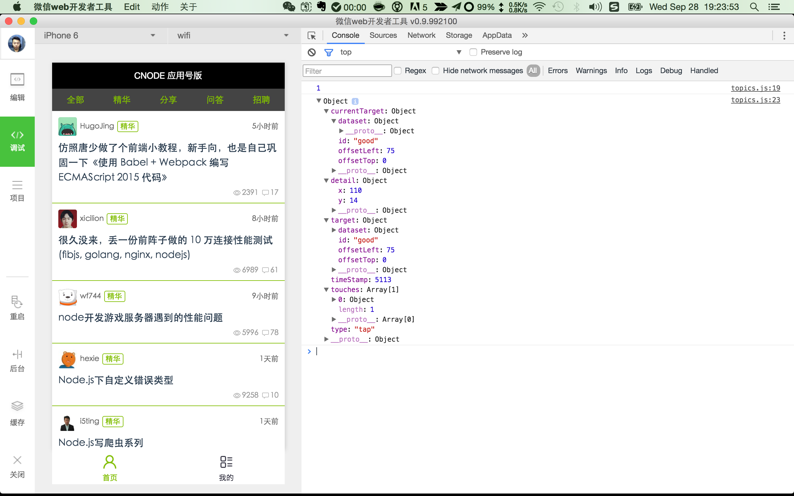
简单的调试
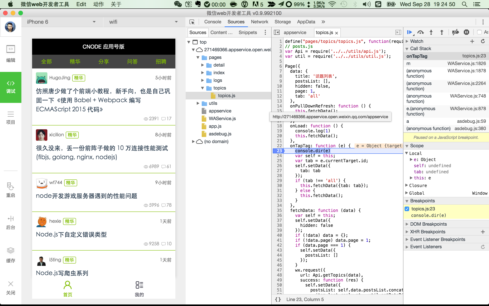
上拉加载下一页
所有的组件能和object是一样，就2各种：属性（基本类型，Boolean，Number，String）和行为（EventHandle）
<scroll-view class="posts-list" style="height:100%" scroll-y="true" bindscrolltolower="lower">
这里的class，style，scroll-y，bindscrolltolower都是属性，唯一不一样的是bindscrolltolower，它实际上是行为
bindscrolltolower EventHandle 滚动到底部/右边，会触发scrolltolower事件
即我们在移动端常说的上拉加载更多。
这和我们写react、vue实际上是非常类似的。
https://github.com/airyland/vux/blob/master/src/components/panel/index.vue
<template>
<div class="weui_panel weui_panel_access">
<div class="weui_panel_hd" v-if="header" @click="onClickHeader" v-html="header"></div>
<div class="weui_panel_bd">
<!--type==='1'-->
<a :href="getUrl(item.url)" v-for="item in list" @click.prevent="onItemClick(item)" class="weui_media_box weui_media_appmsg" v-if="type === '1'">
<div class="weui_media_hd" v-if="item.src">
<img class="weui_media_appmsg_thumb" :src="item.src" alt="">
</div>
<div class="weui_media_bd">
<h4 class="weui_media_title">{{item.title}}</h4>
<p class="weui_media_desc">{{item.desc}}</p>
</div>
</a>
<!--type==='2'-->
<div class="weui_media_box weui_media_text" v-for="item in list" @click.prevent="onItemClick(item)" v-if="type === '2'">
<h4 class="weui_media_title">{{item.title}}</h4>
<p class="weui_media_desc">{{item.desc}}</p>
</div>
<!--type==='3'-->
<div class="weui_media_box weui_media_small_appmsg">
<div class="weui_cells weui_cells_access">
<a class="weui_cell" :href="getUrl(item.url)" v-for="item in list" @click.prevent="onItemClick(item)" v-if="type === '3'">
<div class="weui_cell_hd">
<img :src="item.src" alt="" style="width:20px;margin-right:5px;display:block">
</div>
<div class="weui_cell_bd weui_cell_primary">
<p>{{item.title}}</p>
</div>
<span class="weui_cell_ft"></span>
</a>
</div>
</div>
</div>
<a class="weui_panel_ft" :href="getUrl(footer.url)" v-if="footer && type !== '3'" @click.prevent="onClickFooter" v-html="footer.title"></a>
</div>
</template>
<script>
import { go, getUrl } from '../../libs/router'
export default {
props: {
header: String,
footer: Object,
list: Array,
type: {
type: String,
default: '1'
}
},
methods: {
getUrl (url) {
return getUrl(url, this.$router)
},
onClickFooter () {
this.$emit('on-click-footer')
go(this.footer.url, this.$router)
},
onClickHeader () {
this.$emit('on-click-header')
},
onItemClick (item) {
this.$emit('on-click-item', item)
go(item.url, this.$router)
}
}
}
</script>
<style lang="less">
@import '../../styles/weui/widget/weui_panel/weui_panel';
@import '../../styles/weui/widget/weui_media_box/weui_media_box';
</style>
loading
其实非常简单的,定义模板
<loading hidden="{{hidden}}">
加载中...
</loading>
那这个hidden="{{hidden}}"呢？模板都是data里的，so
Page({
data: {
title: '话题列表',
postsList: [],
hidden: false,
page: 1,
tab: 'all'
},
默认是false，因为一进来就要loading。。。
进来的时候通过lifecyle的onload
onLoad: function () {
console.log(1)
this.fetchData();
},
然后隐藏loading的操作就在http请求数据之后了。
wx.request({
url: Api.getTopics(data),
success: function (res) {
self.setData({
postsList: self.data.postsList.concat(res.data.data.map(function (item) {
item.last_reply_at = util.getDateDiff(new Date(item.last_reply_at));
return item;
}))
});
setTimeout(function () {
self.setData({
hidden: true
});
}, 300);
}
});
其中的
self.setData({
hidden: true
});
还得上文中说的data是全局上下午吗？
页面间跳转
模板定义
<view class="posts-item" index="{{index}}" id="{{item.id}}" catchtap="redictDetail">
注意
catchtap="redictDetail"
page里的redictDetail方法
redictDetail: function (e) {
console.log('我要看详情');
var id = e.currentTarget.id,
url = '../detail/detail?id=' + id;
wx.navigateTo({
url: url
})
},
实际上有2种，上面是通过api实现的，还有一种是通过指令来实现的
<navigator url="navigate?title=navigate" hover-class="navigator-hover">跳转到新页面</navigator>
<navigator url="redirect?title=redirect" redirect hover-class="other-navigator-hover">在当前页打开</navigator>
utils定义
page里
// posts.js
var Api = require('../../utils/api.js');
var util = require('../../utils/util.js');
api.js具体内容
'use strict';
var HOST_URI = 'https://cnodejs.org/api/v1';
var GET_TOPICS = '/topics';
var GET_TOPIC_BY_ID = '/topic/';
function obj2uri (obj) {
return Object.keys(obj).map(function (k) {
return encodeURIComponent(k) + '=' + encodeURIComponent(obj[k]);
}).join('&');
}
module.exports = {
// 获取列表数据
getTopics: function (obj) {
return HOST_URI + GET_TOPICS + '?' + obj2uri(obj);
},
// 获取内容页数据
getTopicByID: function (id, obj) {
return HOST_URI + GET_TOPIC_BY_ID + id + '?' + obj2uri(obj);
}
};
感觉跟啥像？
Promise?
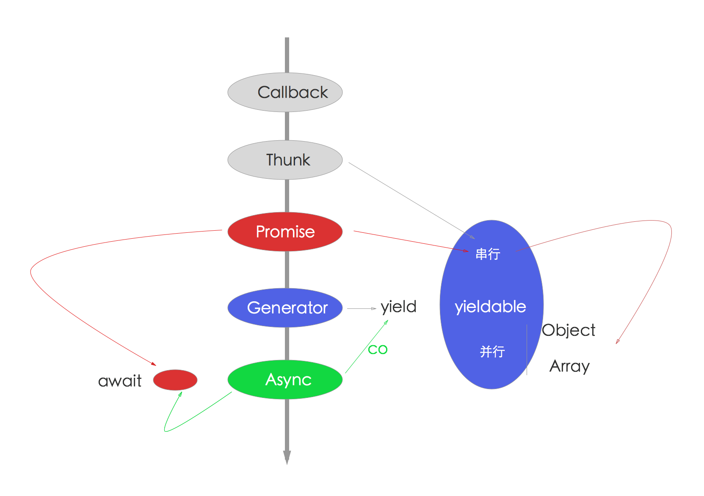
wxss
http://wxopen.notedown.cn/framework/view/wxss.html
缓存
这里没有使用，如果使用登录的时候就需要了，比如token
文档 http://wxopen.notedown.cn/api/data.html
k-v的，还是比较有限的
websocket
- pub/sub
- im
高级玩法
https://github.com/MeCKodo/wxapp-cli
优势
1.可以在任意IDE中开发
2.可使用ES6或ES5
3.支持sass和less
4.可以同时编写.html|.wxml，.wxss|.scss|.less 文件，最后都会转换为.wxml和.wxss
5.编写完任何文件（包括.json）只需要去微信开发者工具中点击重启即可预览
6.NODE_ENV 环境切换 (dev|production)
7.支持eslint (在gulpfile文件打开36行注释即可,下个版本会集成到cli配置选项中)
劣势
1.由于微信封闭的环境内，所以没有sourcemap，但这不太影响调试（即使是经过编译后的代码，本人测试了出bug的代码，还是可以从控制台跳到源码的地方）
2.由于微信封闭的环境内，无法实现reload或者hot reload
PS: 当然如果你不想写ES6也是完全可以的 在后面统一介绍命令
Q& A
微信小程序开发需要具体哪些技术知识？
- 会js、css
- 理解移动端h5相关开发概念
- 使用微信提供的wxml和wxss
- 熟悉微信提供api
- 熟悉http协议
适合0基础的前端工程师学习？
和h5类似，入门简单，精通很难
微信小程序跟HTML5、Web APP的关系
- 小程序不是HTML5，也不是Web APP
- 都是展示层的
- 基础知识都是一样的，移动端，http协议等
- api和开发方式有一定差异，都属于受限开发
- 小程序的抽象程度更高，与是h5实现还是native实现无关
- 和Web App关系不大，但会Web App学这个还是比较容易的
怎么学习微信小程序，如果没有邀请码，可以怎么学？
上面讲过了
如何看待h5？
我曾讲过，未来是h5的，原因有2
硬件越来越牛逼，廉价，内存不会成为限制条件 网络带宽越来越牛逼 这估计也是目前h5受限的2个主要点吧。
微信公众号时代，引入h5，以及手游，算是让h5火了一把，但整体来说开发体验并不好，一般大家只用h5写一些交互少、偏于展示层的东西。而完整的hybrid应用，还是要有一定比例的借助native来实现一些原生功能的。
无论是h5虚拟化也好，还是各种折腾，比如cordova，react natvie也好，我一直认为它们是过渡状态，从native到h5的过程中，限于条件妥协的产物。当然，在目前来看，想要取得好的效果，难免要使用它。
最近几年，被h5冲击的native开发越来越惨淡（相比2010年到2014年），甚至有人说app已死，开发公众号h5就可以了。这是客观的某种事实，确实微信有用户基数，是比较好的入口，另外你需要的功能基本上都可以实现。而且成本上，相对要低一些。
可，它真的很完美么？
不见得吧，1）跨平台是永远的痛，一般连iOS6+，Android 4+都很难兼顾，有时候讨厌的让人不禁想起f**k ie6.。。 2）各个浏览器，版本实现不一致，以存储为例，localstorage，sqlite，indexedb等，每个版本可能都不一定支持，又何谈通用性呢？混乱不是不能解决，成本问题，3）开发看着容易，但你很难找到好的开发人员。写的话大家差不多都可以，但谈到优化，大部分人都怂了，这其实也是目前h5效果不好的原因。
在平衡时间和实现之间，有时我们忍了。。。这大概就是未来吧
说了一堆h5的缺点，也说说它的优点吧，目前无数开拓者，前仆后继，都投入到这个坑里，无数的解决方案，框架，优化，每天都在产生。我们现在觉得前端发展无比迅速，其实很大比例是h5推动的，它已经是前端领域必不可少的组成部分。无论是vue 2， ng2，ionic2等都是比较优秀的，甚至基于weui都衍生出大把的框架。这是时代带给我们的，是挑战，也是机遇
再说说人的问题
传统的前端不会h5都不好意思说自己是前端，目前招聘最火就是前端了，面试是不可能不问h5相关问题的 iOS和Android开发，如果不会h5，未来的出路会越来越窄，当下北京的iOS培训出来的都很难找工作（甚至有不要薪水蹭经验的）。对于那些在职的人来说，每天领导都在“算计”他们，要不hybrid？ h5就像前端开发里躲不开Node.js一样，无论你是做什么的，你都绕不开h5
再回头说微信应用号这事儿，微信会变成OS（操作系统），以后大家只要用我就好了，把其他应用变成微信下面的子应用，这下世界就清净了。以前一直觉得chrome os的理念很先进，不想竟然微信实现了。。。
微信下一步可能要和手机厂商合作了，手机里只有微信OS，打开就是微信界面，然后想安装应用，请打开微信OS里的h5 app store。。。
是不是挺吓人的一件事儿？估计其他大厂又要躲在厕所哭泣：不要让我的app下架。。。，微信说：你司核心价值观有问题，改了之后再说吧
如何快速学习？
小程序只是增加了一种选择，以前是h5，pc，app，现在是小程序，h5，pc，app，它们无疑都是展示层的实现，所以对后台是没有影响的。它们的共性是会js能让你开发的更好，而今Node.js凭借其性能和强大npm生态，以及在大前端的火爆，使得Node.js无处不在。
Node全栈是一个比较好的方向，如果不想全栈，你至少要考虑前端
现代web开发里的大前端
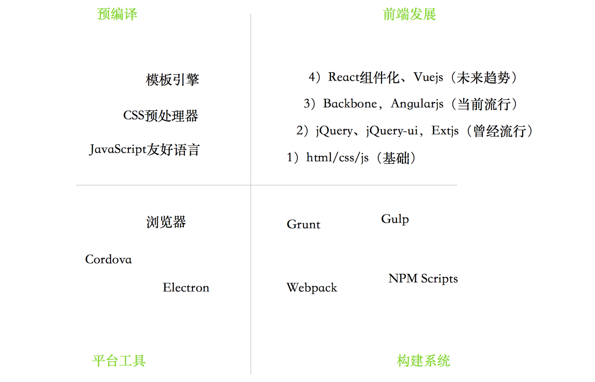

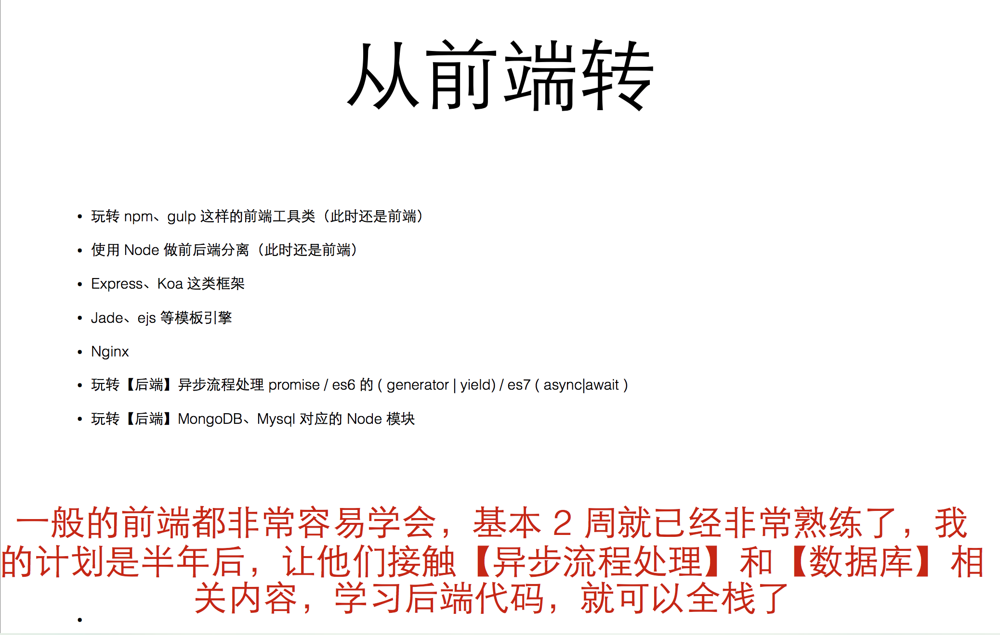
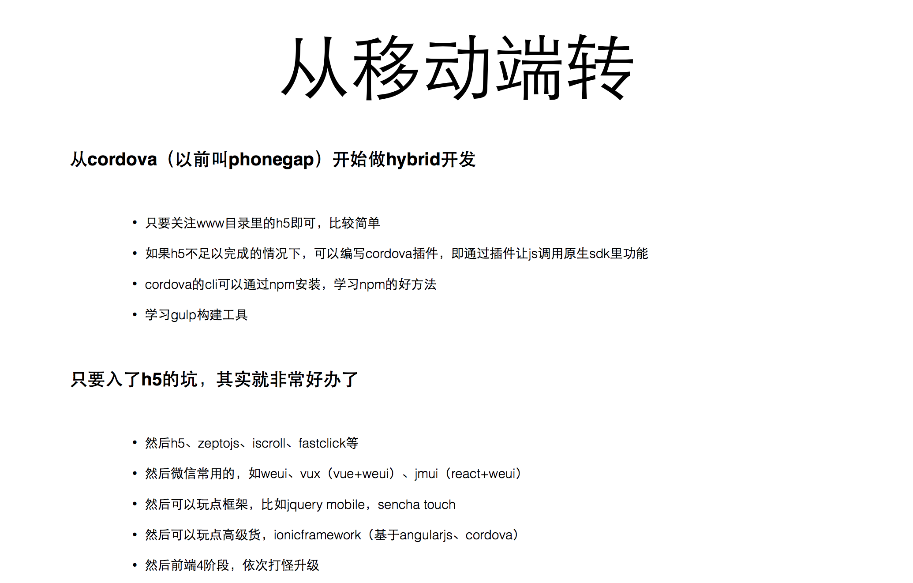
更多的
高可用架构专用《全栈工程师之路-Node.js》 http://i5ting.github.io/nodejs-fullstack/
关于小程序未来
- 开发组件定义
- html转wxml，目前已经有人做了
- 扫一扫
- schema url open
推荐一些学习资料
参见
- https://github.com/justjavac/awesome-wechat-weapp
- http://wxopen.notedown.cn/
关于现状
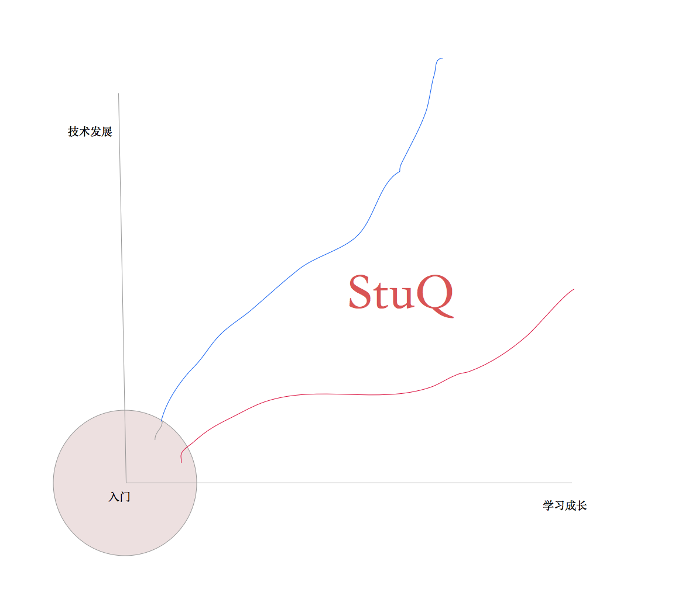
- 技术发展太快，是指数型发展
- 人的学习速度是平滑的上升的曲线
- 持续学习，利用好时间，每日精进
作业
这个分类tab实现的太low了，很明显没有花费时间，如何通过class属性来实现一个更加好看的，带有选中状态的分类tab么？
大家可以自己试试